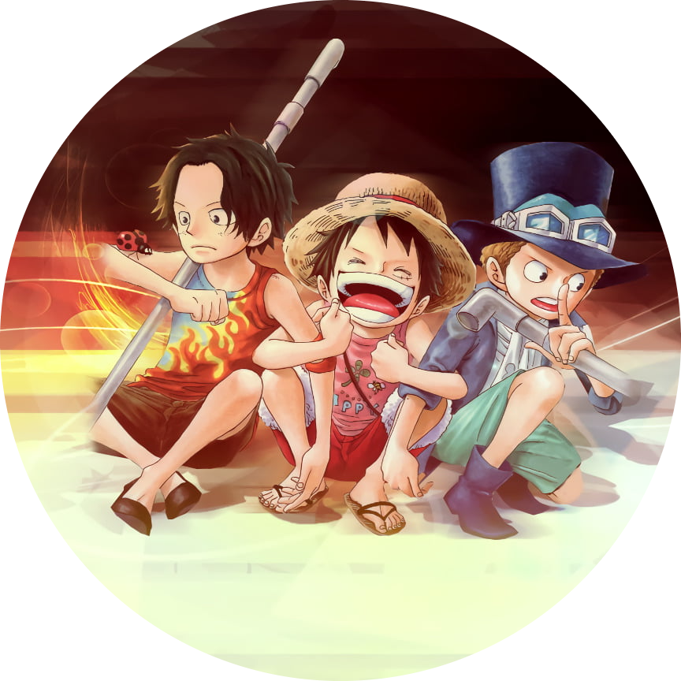
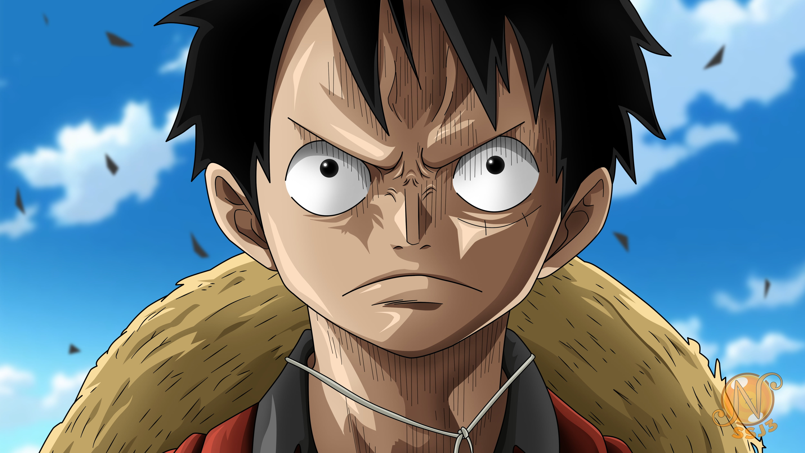
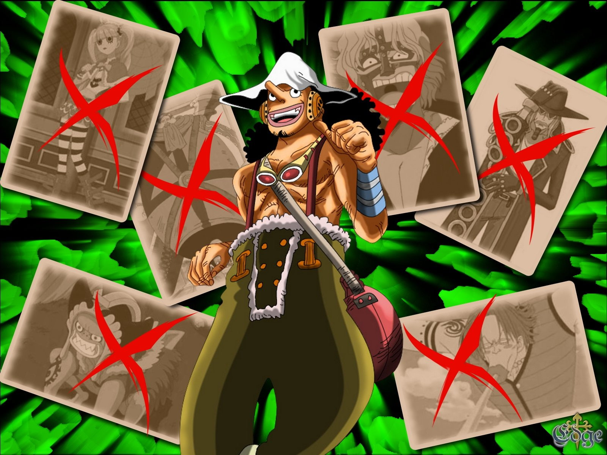
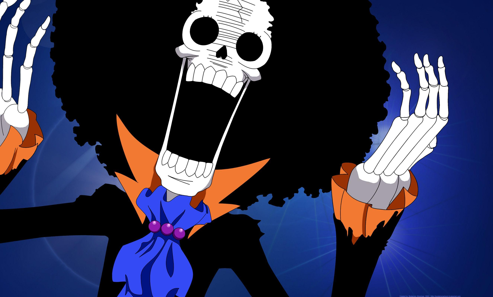
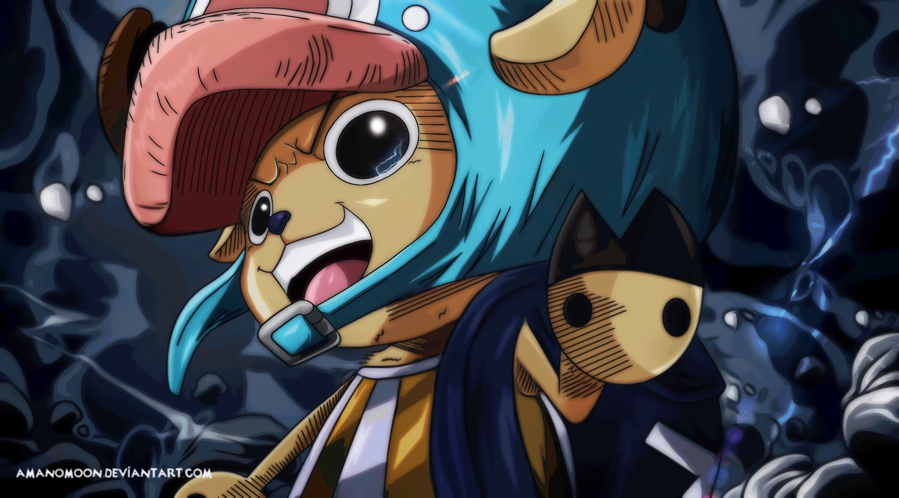
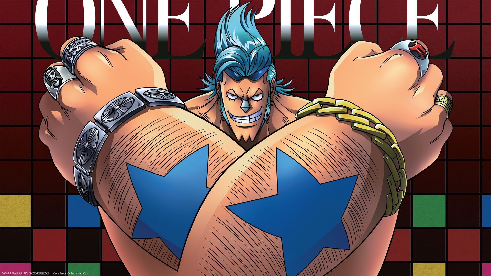
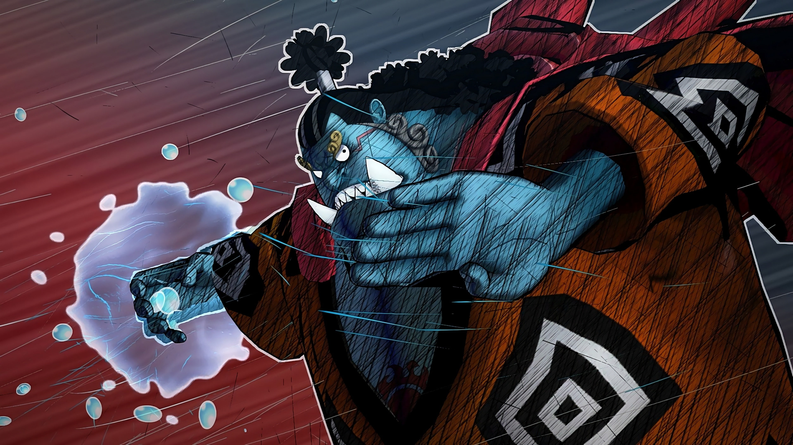

|  |
Monkey D luffyThe King Of Pirates Luffy is the captain of the Straw Hat Pirates, and dreamt of being a pirate since childhood from the influence of his idol Red-Haired Shanks. At the age of 17, Luffy sets sail from the East Blue Sea to the Grand Line in search of the legendary treasure, One Piece, to succeed Gol D. Roger as "King of the Pirates". |
| Luffy |  | Zoro |
|
Sanji |
|
Ussop |  |
|---|---|---|---|---|---|---|---|
| Brook |  | Chopper |  | Franky |  | Jinbe |  |
| Luffy | : 1,500,000,000 Berries |
| Jinbe | : 420,000,000 Berries |
| Sanji | : 330,000,000 Berries |
| Zoro | : 320,000,000 Berries |
| Usopp | : 200,000,000 Berries |
| Franky | : 92,000,000 Berries |
| Brook | : 83,000,000 Berries |
| Chopper | : 100 Berries |